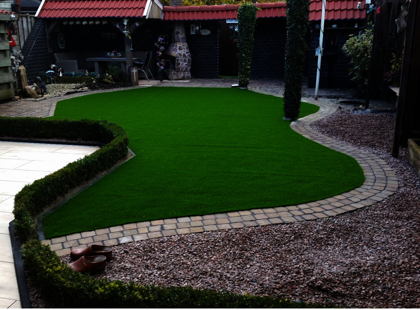
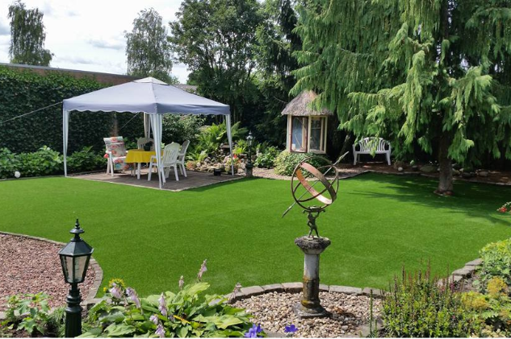
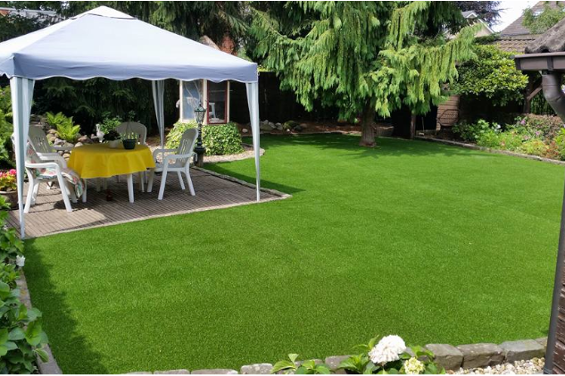

Altijd een perfect groen gazon — zonder omkijken.
Kieskunstgras levert en plaatst hoogwaardig kunstgras voor iedere tuin. Onderhoudsvrij, kindveilig en 8 jaar garantie.

Onze Kwaliteit
8 jaar garantie
Al onze kunstgrassoorten hebben 8 jaar garantie
Gekrulde sprieten
Om het kunstgras nog echter te laten lijken gebruiken wij gekrulde sprieten
Loodvrij
Onze kunstgrassen zijn loodvrij, geen gevaar voor spelende kinderen
De perfecte oplossing voor een onderhoudsvrije tuin
Droomt u van een strakke, altijd-groene tuin — maar heeft u geen tijd voor al het onderhoud? Kieskunstgras biedt de oplossing. Ons kunstgras ziet er het hele jaar door prachtig uit, is bestand tegen alle weersomstandigheden en vereist vrijwel geen onderhoud.
Geen maaien. Geen bemesten. Geen bewateren. Alleen genieten van uw tuin.
Onze grassen zijn gemaakt van hoogwaardige, loodvrije materialen en worden vakkundig geplaatst door onze eigen monteurs.
Bekijk alle kunstgrassoorten →

Waarom kiezen voor kunstgras van Kieskunstgras?
Kunstgras biedt meer dan alleen gemak. Het is een slimme, duurzame keuze voor uw tuin.
- Ziet er 100% natuurlijk uit dankzij gekrulde sprieten en BiColor technologie
- Vrijwel geen onderhoud nodig
- Het hele jaar door mooi groen, ook in de winter
- Loodvrij en veilig voor kinderen en huisdieren
- Ecovriendelijk en duurzaam
- Bestand tegen intensief gebruik
- 8 jaar garantie
Waarom voor kunstgras kiezen?
Kunstgras is niet alleen praktisch — het geeft uw tuin een strakke, verzorgde uitstraling het hele jaar door. Met een lange levensduur, minimaal onderhoud en een keuze uit diverse kleuren en poolhoogtes vindt u altijd een gras dat bij uw tuin past.
Bekijk ons assortiment →BiColor
Door het bicolor systeem lijkt het kunstgras nog realistischer.
Ecovriendelijk
Ons kunstgras is veilig voor milieu en mens.
Intensiefgebruik
Ons kunstgras kan de drukste tuin weerstaan, intensief gebruik is geen probleem.
Loodvrij
Onze kunstgrassen bevatten geen lood waardoor ze enorm geschikt zijn voor spelende kinderen.
8 jaar garantie
Wij zijn zo overtuigd van de kwaliteit dat wij 8 jaar garantie geven op ons kunstgras.
Levensecht
Door de gekrulde sprieten ziet ons kunstgras er levensecht uit.